Institutional Disruptions
To ensure internal validity of the analyses with the concept of institutional disruption, we focus on sudden and unpredictable shocks that created severe and systemic losses in the country market. The following were the steps we followed to select disruptions:
- We follow Baker and Bloom (2013) who show that large terrorist attacks and natural catastrophes are associated with abnormal levels of market volatility and significantly explain GDP growth.
-
We collected data on these disruptions from different sources.
- 2.1 We start by pulling all the data on shocks from the EM-DAT from the Centre for Research on the Epidemiology of Disasters that is supported by the World Health Organization and represents a comprehensive international database on catastrophes. EM-DAT records a shock if it meets the following criteria: at least one of the following criteria: 10 or more people killed, 100 or more people affected, a declaration of a state of emergency, or a call for international assistance. Further information can be accessed at http://www.emdat.be/.
- 2.2 There are 4,273 shocks in the period 2007-2018 in the EM-DAT database. For these, we obtained data on human and economic loss from the United Nations Office for Coordination of Humanitarian Affairs (UNOCHA) and the reinsurance company Swiss RE.
- We build on Ballesteros and Gatignon (2019) to capture suddenness and unpredictability and select shocks whose end date is within 30 days of the start date. Close to 90 percent of firm responses to these shocks come within eight weeks of the start date when environmental uncertainty and causal ambiguity are high (Ballesteros and Kunreuther 2018, Bloom 2009). There are 3,701 classify as sudden shocks.
- To meet a stringent characterization of severity, we calculate the percentile distribution of deaths, affected people, and economic damage by country for all disasters reported between 1997 and 2018 in EM-DAT. We use percentiles because the mean and standard deviations are inefficient location statistics given the skewness of the historic distribution of consequences.
- 4.1 Following previous work that classify disasters based on their impacts, we focus on severity values at the 99th percentile (Cavallo et al. 2013). Table i has the cutoffs of each variable by country.
- 4.2 To apply fixed-effects models, we drop 15 single-disaster countries that we incorporate in robustness tests. At the 99th percentile of severity, there are 234 shocks, or 270 country disruptions given that some shocks affect different nations. Our analyses thus cover 125 countries representing the four levels of country income according to the World Bank as seen in Figure i. Table ii list all the institutional disruptions that comprise this study.
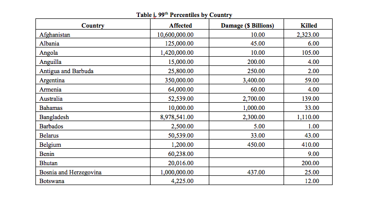
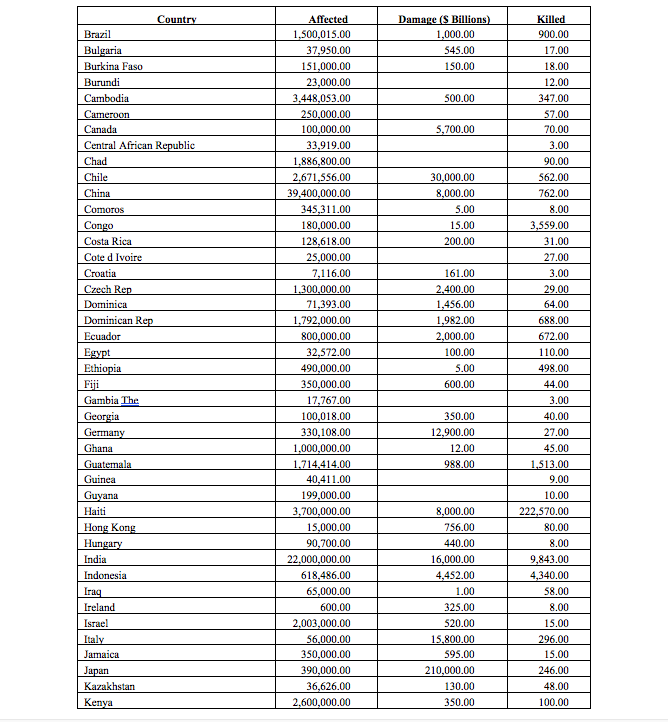
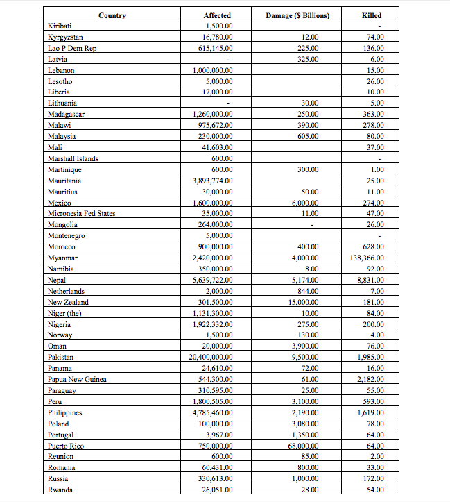
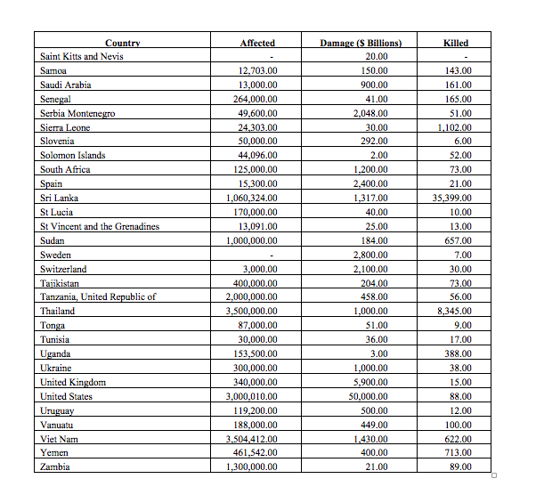
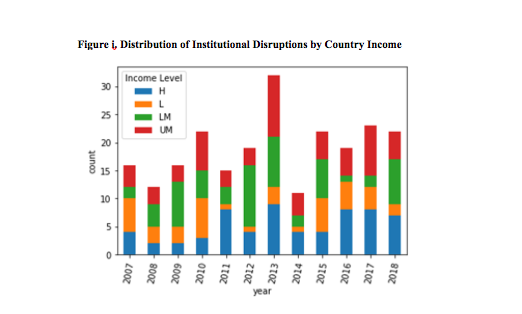 Distributional graphs of the disruptions we study are presented below.
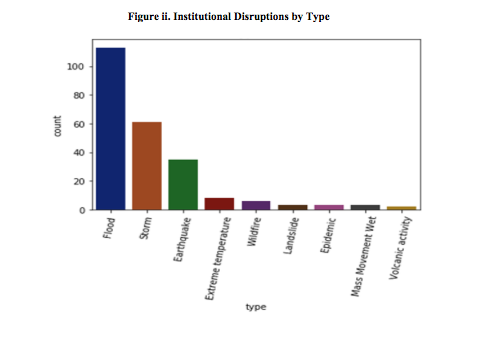
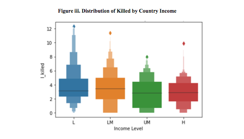
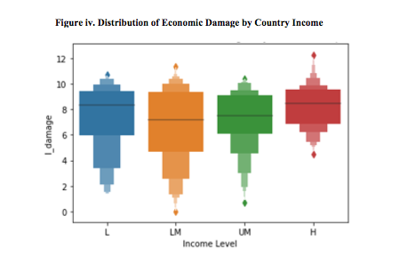
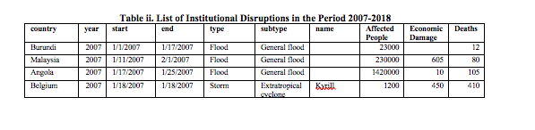
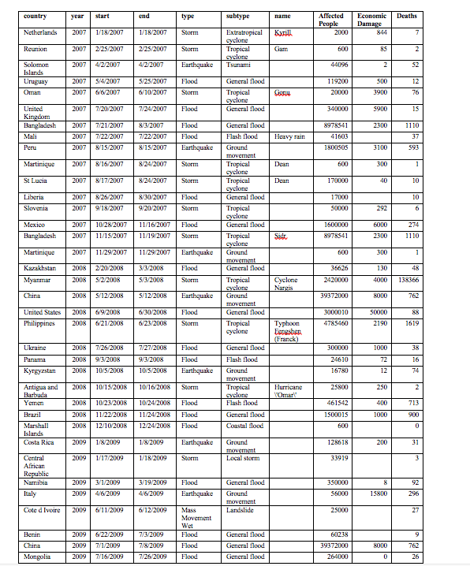

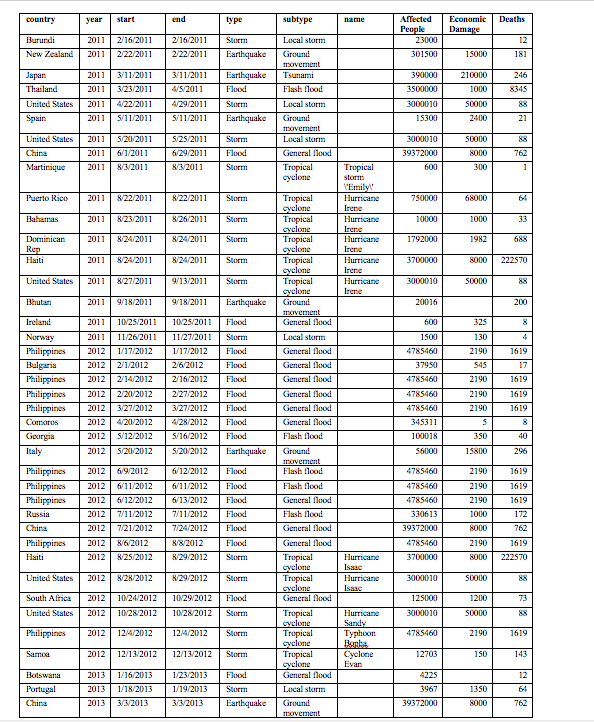
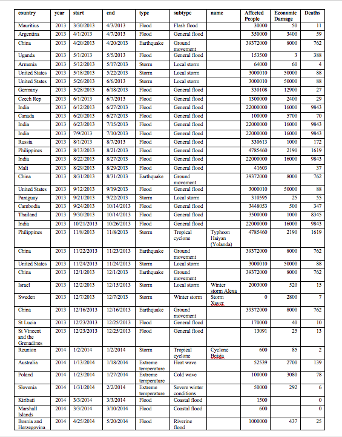
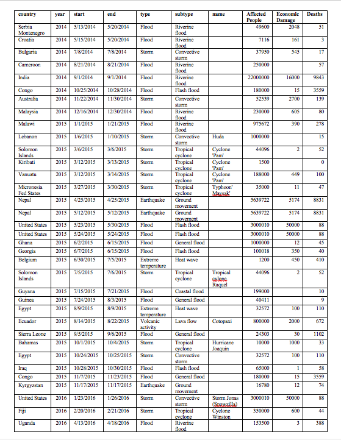
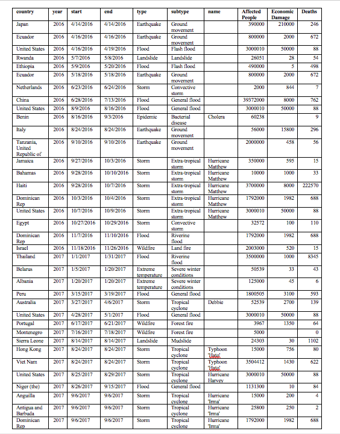
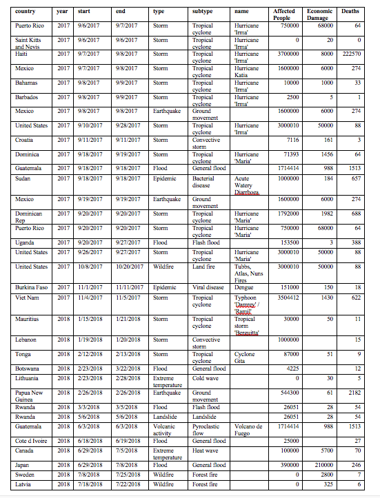
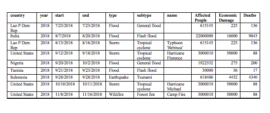